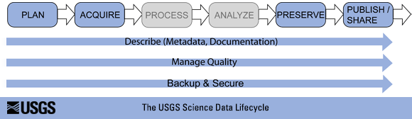

Data Curation
for liaison librarians
Tim Norris - tnorris@miami.edu
Fall 2016 Library Seminars
Fall 2016 Library Seminars

Big Data

Navarro, Fran (2014). Foco en Almacenamiento. http://www.slideshare.net/franmod/tendencias-storage. Slide 42.
Some Useful Abstractions

“Information is not knowledge.
Knowledge is not wisdom.
Wisdom is not truth.
Truth is not beauty.
Beauty is not love.
Love is not music.
Music is THE BEST.”
― Frank Zappa
| Active vs. Static: | Data Storage: | Example or Focus: | Typical File Formats: |
| ACTIVE | Raw Data: | Temperature readings over time | Paper? Device-specific? .xlsx, … |
| Processed Data: | “Cleaned,” normalized temperature data compiled in spreadsheet | .xlsx, .sas, … | |
| Analyzed Data: | Temperature data with averages computed, graphs charted | .xlsx, .sas, … | |
| STATIC | Finalized, Published Data: | Do the data support hypothesis? | .csv |
http://classguides.lib.uconn.edu/content.php?pid=355458&sid=3391384
The Data Deluge
Data Sharing Requirements
- NIH: October 2003
Data Management Requirements
- NSF: January 2011
- NEH: June 2011
The 2013 OSTP Memo: Open Data
- Federally funded research results should be made accessible to the public
- Both peer-reviewed publications and data
Data?
Numbers
Words
Citations / references
Notebooks / marginalia
Specimens
Field Samples
Images
Videos / sound recording
Relationships
Models
Code
Words
Citations / references
Notebooks / marginalia
Specimens
Field Samples
Images
Videos / sound recording
Relationships
Models
Code
Data?
“Examples of Research Data and Materials include laboratory notebooks, notes of any type, photographs, films, digital images, original biological and environmental samples, protocols, numbers, graphs, charts, numerical raw experimental results, instrumental outputs from which Research Data can be derived and other deliverables under sponsored agreements.”
Johns Hopkins University (2008) - http://jhuresearch.jhu.edu/Data_Management_Policy.pdf
Data?
Definitions: The term “Research Data” in this document refers to information recorded and/or collected for research performed at or under the auspices of the University regardless of the form or the media upon which it is recorded. This term includes, but is not limited to, computer programs (code and documentation), computer databases, instrumental outputs, raw numerical results, original biological or environmental samples, photographs, digital images, films, protocols, graphs, and other deliverables produced under sponsored agreements. Research Data also includes any records related to the design, conduct or reporting of the research that would be necessary to reconstruct the reported research results. Research data can be intangible (statistics, findings, conclusions, etc.) and tangible (notebooks, printouts, etc.).
Data is an Innovation?
Innovations: patentable or un-patentable inventions, discoveries, processes, compositions, research tools, data, ideas, databases, know-how, copyrightable works that are not scholarly or artistic Creations and tangible property, including biological organisms, engineering prototypes, drawings, and software created, conceived or made by Applicable Personnel within their normal duties (including clinical duties), course of studies, field of research or scholarly expertise or making more than Incidental Use of University’s resources. (2016-17 Faculty Manual, p. 136)
Why Manage Data
- Productivity
- Publishing
- Knowledge creation
- Career advancement
- Compliance
- Grant writing
- University policy
- Research Ethics
¿SOMETHING ELSE?

Data Curation Lifecycle
Data Curation Center (DCC)
Data Curation Center (DCC)
UC Davis



The 2013 OSTP Memo
- Transparency and efficiency
- Growth, security, value
- Commercial re-use and innovation
- Data (from OMB Circular 110):
“Data is defined … as the digitally recorded factual material commonly accepted in the scientific community as necessary to validate research findings including data sets used to support scholarly publications, but does not include laboratory notebooks, preliminary analyses, drafts of scientific papers, plans for future research, peer review reports, communications with colleagues, or physical objects, such as laboratory specimens.”
Lots of sticks!!
UC Santa Cruz


University of Miami Libraries
Research Data Management
Before: Data Management Planning / Grant Process
During: Compliance and Productivity
After: Publication and/or Repository Deposit
During: Compliance and Productivity
After: Publication and/or Repository Deposit
Before: Data Management Planning / Grant Process
During: Compliance and Productivity
After: Publication and/or Repository Deposit
During: Compliance and Productivity
After: Publication and/or Repository Deposit
Privacy/Security Considerations
Storage and backup strategies
File System Organization
File Naming Conventions
File Format Choice
Documentation and metadata
Roles and responsibilities in research environment
Sharing and collaboration strategies
Ownership of data
Access strategies / Access restrictions
Storage and backup strategies
File System Organization
File Naming Conventions
File Format Choice
Documentation and metadata
Roles and responsibilities in research environment
Sharing and collaboration strategies
Ownership of data
Access strategies / Access restrictions
Before: Data Management Planning / Grant Process
During: Compliance and Productivity
After: Publication and/or Repository Deposit
During: Compliance and Productivity
After: Publication and/or Repository Deposit
Follow file naming, organization and format conventions
Documentation and metadata
Acquiring and cleaning data
Regularly backup all data
Be mindful when sharing / version control
Access / privacy policy enforcement
Documentation and metadata
Acquiring and cleaning data
Regularly backup all data
Be mindful when sharing / version control
Access / privacy policy enforcement
Before: Data Management Planning / Grant Process
During: Compliance and Productivity
After: Publication and/or Repository Deposit
During: Compliance and Productivity
After: Publication and/or Repository Deposit
Publish
Deposit in a repository
Deposit in a repository
Federal Movement Towards Open Data

Whitmire, Amanda L. (2014). Research Data Management Curriculum, Lecture 2: Introduction to Research Data Management. Oregon State University Libraries. Retrieved 11/04/2015 from: http://figshare.com/articles/GRAD521_Research_Data_Management_Lectures/1003835
Next Steps?
The 2013 OSTP Memo
- Transparency and efficiency
- Growth, security, value
- Commercial re-use and innovation
- Data (from OMB Circular 110):
“Data is defined … as the digitally recorded factual material commonly accepted in the scientific community as necessary to validate research findings including data sets used to support scholarly publications, but does not include laboratory notebooks, preliminary analyses, drafts of scientific papers, plans for future research, peer review reports, communications with colleagues, or physical objects, such as laboratory specimens.”
Lots of sticks!!